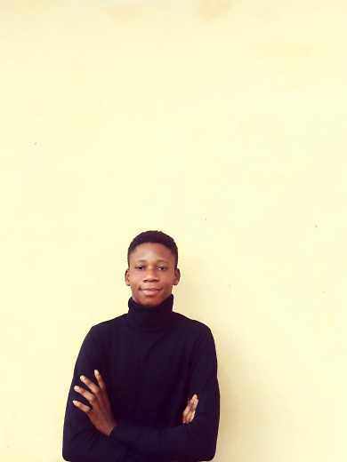

Get to know more about me and my journey in software engineering.

I am an aspiring Software Engineer passionate about building modern web applications and solving real-world problems through technology.
My current focus is on Java, JavaScript, HTML, CSS, and MongoDB. I enjoy learning new technologies and turning ideas into functional software solutions.
I’m currently studying Software Engineering at NIIT, where I’m building a solid foundation in programming, software development, and problem-solving. My training focuses on core technologies like Java, JavaScript, HTML, CSS, and MongoDB, along with hands-on project development that reflects real-world software engineering practices. At NIIT, I work on practical projects such as a Learning Management System and a banking web interface, which help me understand how real software systems are designed, structured, and deployed. These projects are not just assignments—they help me think like a developer who is building for real users. I also take part in coding practice and collaborative tasks, which improve my debugging skills, teamwork, and ability to break down complex problems into simple solutions. Overall, my goal is to grow from a student developer into a professional software engineer who can build reliable and scalable applications that solve real problems.
My career goal is to grow into a professional software engineer who builds impactful and scalable software solutions that solve real problems, starting from my local environment and expanding to a wider audience across Africa. I want to be part of the next generation of African developers who are not just users of technology, but creators and innovators shaping it. My focus is on building applications that improve education, finance, and everyday digital experiences, especially in communities where technology can make a real difference. As I grow, I aim to contribute to projects that can scale beyond borders—software that starts as a simple idea but has the potential to serve users across Nigeria and other parts of Africa. Ultimately, I want to be known as a developer who builds useful, reliable, and meaningful systems that help bridge the gap between technology and everyday life on the continent.